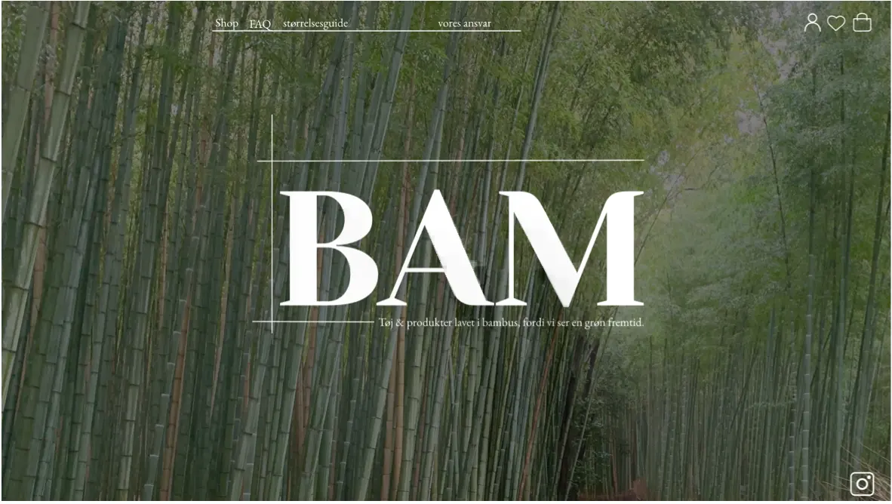

Opgaven
-
I tema 3, fik vi til opgave at lave en prototype af en webshop.
Her lærte vi om konceptudvikling, USP og anvendelse af forskellige
researchmetoder. Samt hvilke designmetoder man kan bruge for at
starte designprocessen.

Arbejdsprocessen
-
Til at løse opgaven, fandt jeg på et koncept til min virksomhed,
som gik på at sælge tøj og produkter udelukkende i bambus.
Herefter startede jeg min proces med at anvende metoden desk
research, for at undersøge andre hjemmesider med samme koncept.
Hvilket førte mig videre til en survey undersøgelse, som kunne
hjælpe mig med at af- eller bekræfte mit koncept.
Til at komme i gang med designprocessen benyttede jeg mig af
crazy-8s metoden, som hjalp mig i gang med at kunne lave en lofi
prototype.
Links: